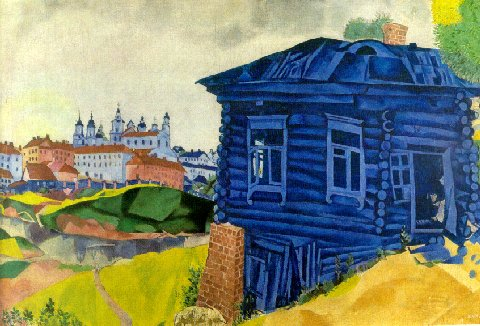
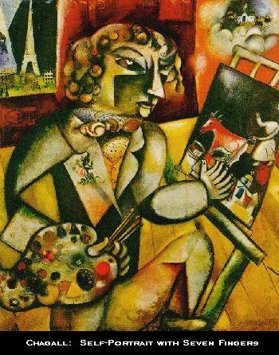

Nem bír magával a rágalmazó,
mocskolódó Judapest zsidó blog. Vörös posztó vagyunk a szemükben, olyannyira, hogy bár állításuk
szerint nem szabad velünk foglalkozni, mégis óriási vehemenciával kezdtek mentegetőzni a tegnap
közölt, A cionista terror kronológiája című írásomra. Állításuk szerint ez az írás arról szól, hogy
"a zsidók miért utolsó, ocsmány gazemberek (és voltak mindig
is)." Kérem, én ilyet nem mondtam, de ha a Judapest így gondolja, lehet, hogy tévedek.
Ezután zsidó "bloggertársaink" sajátos választ közölnek az egyébként nem általam írt, csak
lefordított kronológiára, amivel nyilván azt kívánják bizonyítani, hogy a zsidók mind csupa
derék, hasznos emberek (és voltak mindig is). Bár az általam leírtakra nem válaszolnak, csak egy
kézlegyintéssel hülyeségnek nyilvánítják, fő érvük szerint azért, mert a Bombagyár "valahol egy kistarcsai kocsma és egy BKV-ellenőr klubház színvonala
között mozog", azért halkan megjegyezném, hogy ez nem érv, hanem személyeskedés. Ja, én
nem ezért nevezem rágalmazónak és mocskolódónak a Judapestet - hanem mert az.
Shadai
kedvét a pimaszkodástól elveendő, hadd rögtönözzek egy kis történelemórát, amelyben az általa
felhozott kronológia bizonyos elemeit vizsgáljuk meg.
"~ 1700 kr.e -
Ábráhám, az első zsidó szövetséget köt az Egy Istennel; megszületik az a fajta monoteizmus
(egyistenhit), amelyből később kifejlődik a kereszténység és az iszlám is. Az
“ábráhámi” monoteizmus mai napig a nyugati civilizáció egyik
alappillére."
Ó, tényleg? A Római Birodalom, az ugye
smafu? Ugyanígy a kelta vagy a germán kultúra is? Ábrahám egyébként nem az első "zsidó", hanem
az első izraelita volt, s ebből csak egy törzs volt a zsidóké, akiket ki is zavartak maguk közül,
de ki emlékszik már ennyi év után... Ja, a "Kr. e." nagybetűvel írandó, bipsikém, merthogy
Krisztus személynév, még ha ti úgy tudjátok is, hogy ürülékben főzik éppen.
"~ 1300 kr.e - Exodus; az Egyiptomban fogvatartott zsidók felázadnak a
zsarnokság ellen, meg- és elszabadulnak. A nyugati “emberi jogok” felfogás és
szabadságeszmény első írásos megnyilatkozása ez a történet."
Össze ne szarjam magam az áhítattól. Olyan rohadtul zsarnokoskodtak a zsidókon, hogy
csak a fáraó összes kincsével együtt sikerült elmenekülniük. Ráadásul teljesen kiakadtak, amikor
Mózes előadta nekik, hogy mostantól nem kéne lopni, ölni, paráználkodni, miegymás. Afféle
szabadságeszmény lehetett nekik, hogy ezt is szabad. Azt már csak mellékesen jegyzem meg, hogy a
legutóbbi kutatások szerint Mózes története úgy, ahogy van, kamu, és a zsidók soha nem éltek
Egyiptomban. Tehát nem volt exodus. (Forrás: Visi Tamás, Eötvös József Collegium, Asszirológiai és
Hebraisztikai Tanszék, Budapest. Vele tessék vitatkozni!)
"~ 450-500 kr.e Az az írás, amit ma a legtöbben
“Ószövetségnek” hívnak, végső formát ölt. Ez a zsidó írás az európai kultúra egyik
forrása, a mai napig eleven táplálója. Nyelvünkben és gondolkodásmódunkban - tudva vagy tudatlanul
- ennek a szövegnek a fogalmai, koncepciói élnek. A mózesi könyvek (Genezis, Exodus stb.)
rengeteg olyan fogalmi konstrukciót vezettek be az emberi gondolkodásba, amely a mai napig
meghatároz minket. Paul Johnson konzervatív brit történész (aki nem zsidó) egészen odáig megy,
hogy kijelenti: a mózesi könyvekkel “a zsidók feltalálták a
‘történelmet’”. Ha azt nem is, de legalább öt “civilizációs” dolgot
- koncepciót - ennek a zsidó Írásnak köszönhetünk: 1. Az emberi élet tisztelete (szentsége) 2.
Igazságosság és Egyenlőség fogalmak 3. Oktatás és tanulás fontossága, az írástudás fontossága 4.
Családi értékek 5. Társadalmi felelősségvállalás szerepe, fontossága."
Igen, de a rabbinikus judaizmus nem az Ószövetségre támaszkodik. Itt a bibi. Amúgy az
Ószövetség tényleg szép. Kár, hogy Jézus hatályon kívül helyezte, mivel személyében új szövetség
(lásd Újszövetség) köttetett.
"~ kr.e. 1. század - Rabbi
Hillel élete. Hillel híres rabbi, filozófus, tudós, bölcs volt, az egyik legfontosabb figura a
zsidó történelemben, ő kezdte el a Talmud (a “Szóbeli Hagyományok”) összerakását.
Rabbi Hillel így foglalta össze a zsidó vallás lényegét: “Ne tégy mással olyat, amit
magaddal nem tennél. Most menj, és tanulj.” (Babiloni Talmud, Sábát 31a traktátus). Később
Jézus is erre a gondolatra épített. Ebben az időszakban a zsidó vallás népszerű volt a Római
Birodalomban is, sok pogány erre a hitre tért be (ez volt akkortájt az egyetlen monoteista hit a
piacon)."
Ja, hogy a Babiloni Talmud. Az bizony nagyon szép,
csakhogy a rabbinikus judaizmus tudtommal a Jeruzsálemi Talmudot tekinti irányadónak. Abban meg
egy kicsit más dolgok szerepelnek, de most nem idézem, mert megint azzal jössz majd, hogy
"hamisítvány", noha Luzsénszky Alfonzt háromszor is hiába fogták perbe a lefordítása
miatt.
"~ 7-2 kr.e - az izraeli Betlehemben (Beit Lehem - a “kenyér
városa”) megszületik Yehoshua (יהושע), aki később Jézus néven
válik ismertté (görögből: Iēsous). Yehoshua-Jézus zsidó szempontból karizmatikus próféta
volt. Ezen kívül gyógyító és tanító (rabbi), egy igaz ember (cáddik). Hillel után az ő
tanításának is a humanizmus volt az esszenciája: “Ne ítéljetek, és nem ítéltettek; amit
akartok azért, hogy az emberek ti veletek cselekedjenek, mindazt ti is úgy cselekedjétek.”
Yehoshua-Jézus a szeretet prófétája volt, a megalázottak és kitaszítottak segítője és
gyógyítója: asztalánál bűnösök ülhettek. Erich Fromm írta róla: “És számára a kérdés nem
az, vajon az ember visszatér-e a valláshoz és hisz-e Istenben, hanem az, hogy képes-e
szeretetben élni és az igazságról gondolkodni.” Jézus “utolsó vacsorája” egy
széder vacsora volt, amely az egyiptomi kivonulásra emlékezett."
Igaz ember, akit a farizeusok követelésére, bűntelensége ellenére meggyilkoltak.
Bővebbet az általam írt kronológiában, illetve a Bibliában. Józsua egyébként héber nyelven volt
a neve, de ettől még nem hívták így, mint ahogy engem se hívnak Thomasnak.
"~ 200: elkészül a Misna, a későbbi Talmud alapja. A Misna a Biblia
utáni zsidó irodalom, az úgynevezett “szóbeli Tan” alapja. Elsősorban
vallástörvényeket (haláha) és bölcs mondásokat, tanításokat tartalmaz. Jelentősége: a Talmud
“decentralizálta” a Tórát, pluralizmuson alapulú Tóra (Biblia)-értelmezéseket tett
lehetővé. A “2 zsidó-3 vélemény”-kultúra bölcsője. A vitán és érvelésen alapulú
Talmud-kultúra garancia a fundementalizmus ellen; sok teológus szerint ma valami ilyesmire lenne
szüksége az Iszlám világnak is."
Decentralizálta, azaz
érthetőbben szólva: hatályon kívül helyezte, és a mózesi tízparancsolat helyébe a rabbik
személyes döntéseit helyezte. Hogy a Talmud lenne a garancia a fundamentalizmus ellen? Röhögnöm
kell! Beszélj már erről pár szót egy palesztinnal!
"1400-as évek:
Létrejön egy olyan tanulási módszer a zsidó iskolákban, ami a mai napig megállja a helyét: a
“pilpul” módszer. A pilpul a talmud tanításának az a módszere, mely az ész élesítésére,
a gondolkodási erősítésére kiván hatni és így figyelmen kívül hagyja a talmud és biblia
tudományos értelmezését. Ez a mai “modern pedagógia” lényege is: lexikális tömés
helyett gondolkozni tanítani a gyerekeket!"
Ja, látom, a
saját szent irataidat se bírod nagybetűvel írni. A modern pedagógiát pedig érdekes módon éppen a
zsidó miniszter urak helyezték a lexikális magolás alapjaira.
"1853 - Levi
Strauss megalapítja a Levi Strauss & Company-t. 1873-ban kezdték el gyártani a ma már legendás
“Levi’s” farmereket. Egy Levi’s reklámban szerepelt először a tévében Brad
Pitt és ilyen márkájú sapkája van ma a Magyar Gárdának is."
És akkor ez máris mentesíti a zsidókat minden történelmi gaztettük alól, Dávid király
tömeggyilkosságaitól Ramallahig, ugye? Ez lenne a zsidóság legnagyobb adománya az egyetemes
emberi kultúrához? Az esetleg nem szerepel Levi Strauss neve mellett a lexikonban, hogy az ő
agitációjára kezdtek úgy öltözni a gój fiatalok, ahogy korábban csak a mezei munkákhoz, és
züllött el a külsejük világszerte? A Magyar Gárda sapkája egyébként hogy jön ide? Ha valakit
antiszemitának nevezel ki, de mégsem az, akkor ő a hülye, mert következetlen?
"1856 - megszületik Sigmund Freud (Freibergben, a mai Csehország
területén). Freud volt a modern pszichológia egyik legfontosabb előfutára, de tudománytörténeti
hatásán túlmenően, meghatározó jelentőségű a huszadik századi nyugati ember önmagáról alkotott
képének megalkotásában is. Mindennapjainkból hozzá köthető a tudatalatti jelentőségének, illetve
a kora gyermekkori nevelés befolyásának felismerése, részben a gyermekkor kultusza is. Az I.
világháború után vált igazán népszerűvé, ekkor már szélesebb körben terjedt el, mert a fejlett
országok mindegyike átvette a pszichoanalízis eredményeit. A II. világháború után a hétköznapi
életbe is beépültek a gondolatai, az ‘50-es-’60-as években már tömegfilmek alapja is
lett (pl. Alfred Hitchcock: Psycho)"
Ó, igen, a zseniális Freud, aki a semmiből
teremtett egy új "akadémikus tudományágat", és gajra vágta az egész nyugati civilizáció lelki
életét. A gójok ezután Isten helyett zsidó orvosokkal kezeltethetik lelki problémáikat, persze,
jó pénzért, mellesleg jelentős bevételhez juttatva a gyógyszergyárakat is. Azt tudtad, hogy
Freud veszett gójgyűlölő volt? Tessék, pár idézet tőle:
"De a mozgalom [ti.
a pszichoanalízis tudománya] krémje az utóbbi ötven év alatt főleg zsidó maradt, ahogy a
kezdetektől fogva volt." (Jerushalmi J. H.: Freud's Moses: Judaism Terminable and Interminable,
1991, 98. o.)
"A keresztény vallás nem tartott azokba a szellemi magasságokba, ahova
a zsidó vallás szárnyalt" (Freud S.: Moses and Monotheism, 1939)
Freud munkássága a mai liberális-multikulturalista világnézet egyik alappillére. A
szexuális egyenlőség elvének nyomán létrejött feminista mozgalomról meg csak annyit, hogy a három
leghíresebb vezetője Gloria Steinem, Betty Friedan és Bella Abzug) mindannyian harsány gójgyűlölő
zsidók voltak.
"1874 - megszületik Magyarországon Weisz Erik, akit később
Harry Houdini néven ismert meg a világ. Őt tartják a modern “mágusság”, az
illuzionizmus és szabadulóművészet atyjának. Máig nem sikerült maghaladni munkásságát ezen a
téren.
1886 - Wilhelm Steinitz a világ első
sakk világbajnoka. Steinitz 1836-ban született a prágai zsidó
gettóban."
Fantasztikusak ezek a zsidók.
"1887 - Emile
Berliner feltalálja a gramofont."
Marha nehéz dolga lehetett, miután Edison már 1877-ben feltalálta.
Talán a gramofonlemezt találta fel, nem? Nagyszerű, találtunk 1 darab zsidó újítót. Oké,
becseréljük mondjuk Szamuely Tiborra.
"1887 - megszületik Marc
Chagall, a 20. század egyik legtehetségesebb festője."
Aha, és ilyeneket
festett.
 
Tuti teljesen egészséges volt.
Rajta kívül egyébként csak pár ezren festettek ilyeneket. Ezt hívták később a normális emberek
"entartete Kunst"-nak.
"1887 - Ludwig Zamenhof “feltalálja” az
eszperanto nyelvet."
Ami aztán a világot felforgató szabadkőművesek titkos nyelve lett.
Tuti véletlenül, hiszen beszélhettek volna pápua nyelven is, csak biztos kevés pápua járt a
köreikbe.
"1896 - Hajós Alfréd (Guttman Arnold) aranyérmet nyer az első
Olimpiai Játékokon Athénban: ő volt az első magyar olimpiai bajnokunk. Amúgy építész volt, Alpár
Ignác irodájában, majd Lechner Ödönnel dolgozott."
Na
és, cionista volt? Nem. Ezért nem is emlegeti senki a zsidóságát. Felhívom a figyelmedet, hogy
az általam lefordított kronológia a cionista terror kronológiája, mint címe is mutatja.
Természetesen vannak a történelemben józan, kultúrát építő emberek is, akik egyébként zsidó
származásúak. Ne felejtsd ki a listából Kogutowitz Manót, Beke Manót, de ez a kettő sem tudja
elvenni a harmadik Manó, a Róth (alias Rákosi Mátyás) tevékenységének
eredményét.
"1898 - megszületik Szilárd Leó, későbbi fizikus, a
termodinamika egyik úttörője, a nukleáris láncreakció “feltalálója”. Részt vett a
“Manhatten-tervben” (az atombomba elkészítésében), de végig ellenezte a bomba
bevetését. Miután az amerikai kormányzat mégis bevetette a bombát, Szilárd Leó elfordult a
fizikától. 1964-ben egyik alapítója volt a “Council for a Livable World”
csoportnak."
Neumann Jánost is felsorolhatod. Ettől még a
cionisták rémtettei változatlanok maradnak. A szokásos cionista tempó egyébként a tisztességes
zsidókra mutogatni, amikor megkérdezik tőlük, hogy hé, bipsik, ti mi a faszt mészároltok
ottan?
"1899 - megszületik George Cukor. Cukor Hollywood aranykorának egyik
legmeghatározóbb rendezője volt. 1930-1981 között több, mint 50 filmet rendezett (többek között:
David Copperfield, My Fair Lady, Gone With the Wind, Romeo and Juliet). "
Jó, fasza.
És? Megint találtál egy zsidót, amelyik nem volt cionista? Akkor most keress egy magyart, aki
nem volt nyilas. Ha találtál, akkor fel vannak mentve a nyilasok.
"1903 - egy másik
cukor, Adolph Zukor (sz. Cukor Adolf, Ricsén) létrehozta a világ első olyan
“színházát” Kaliforniában, amely csak filmeket vetített (tehát az első
mozit)."
Hááát, a Wikipedia
movie
theater szócikke szerint...
"the first "theater" in the US
dedicated exclusively to showing motion pictures was Vitascope Hall, established on Canal Street,
New Orleans, Louisiana June 26, 1896 "
De nem baj,
máskor is előfordult már veletek, hogy valaminek az elsőségét le akartátok nyúlni, és pofára
estetek. Aha, biztos ezért akkora az orrotok, az a lökhárító. Na, köszönöm, ma is tanultunk
valamit.
"1905 - Albert Einstein speciális relativitáselmélete a
fizika új ága, mely feloldja a Maxwell-elméletbeli állandó fénysebesség és a Newtoni-mechanika
sebesség-összeadása közötti ellentétet. Azért “speciális”, mert nem foglalja magában a
gravitációt; azt csak tíz évvel későbbi munkájában sikerül belefoglalnia az általános
relativitáselméletbe."
Ebbe most ne menjünk bele, mert
Dragon64 egy korábbi rádióadásban remekül összefoglalta annak történetét, hogyan kerültek Bolyai
számításai és jegyzetei Einsteinhez, és mellesleg kérdezz meg egy fizikust arról, hogy az utóbbi
években miért javasolja egyre több kollégája, hogy az egész relativitás-elméletet miért kellene
átdolgozni, gyakorlatilag "érdemei elismerése mellett elfelejteni". Szó se róla, Einstein nem volt
se hülye, se kókler, de nem egészen a saját munkája volt az.
Arról nem is beszélve, hogy
1919 óta cionistának vallotta magát, úgy értve, hogy támogatná egy zsidó nemzeti otthon
létrehozását. Ezzel még nem is lenne baj, mert ez még nem jelenti feltétlenül azt, amit jelenleg
az a sivatagi kampósorrú banda művel honvédelem címén. Bővebbet a cionizmusról kifejtett
gondolatairól
itt."1908 - Paul Elrich elnyeri az orvosi Nobel-díjat az immunitás terén
végzett munkájáért. Elrich találta meg a szifilisz ellenszerét és ő találta ki a kemoterápia
kifejezést."
Nagyon ügyes volt, egyébként Ehlrich. Egyébként mit szólsz ehhez: 1918-ban
Fritz Haber zsidó vegyész is Nobel-díjat kapott. Az ő nevéhez fűződik a vegyi fegyverek
feltalálása (és kizárólag az övéhez!), neki köszönhető az I. világháború során sok tízezer ember
halála. Miért nincs a listádon?
"1912 - Casmir Funk (Kazimierz
Funk) biokémikus feltalálja a “vitaminok” kifejezést. Több vitamin létezését ő
bizonyította be (pl. B1, B2, C és D vitaminok), ő tisztította/állította elő. Úttörő volt a
rákkutatásban is. "
És akkor mi van? Az autópályát meg Hitler találta fel, és ő is
nevezte el így (Autobahn). Nagy antifasiszta lendületeddel tehát közlekedj
mellékutakon.
"1915 - William Fox (sz. Fried Vilmos, Tolcsván) megalapítja a Fox
Film Corporation-t. 1935-ban hozta létre a 20th Century Fox stúdiót, ami azóta is minden modern
média network mintája."
Nélküle aztán tényleg sehol se
lennénk... Amúgy az eredeti neve Wilhelm Fuchs, használd már végre azt a kurva
Wikipediát!
"1918 - Max Goldberg Detroitban megnyitja az autósok
számára a világ legelső “parkolóját”.
Tyínye, mennyit gondolkodhatott
rajta. Ehhez is a zsidók híres zsenialitása kellett. Nélkületek a buta gójok ma is csak
kóvályognának, és nem tudnák letenni a kocsijukat.
"1921 - Albert
Einstein elnyeri a Nobel-díjat addigi munkásságáért."
Egészségére. Adolf Hitler meg 1938-ban "Man of the Year" lett a Time Magazine-nál.
Amúgy megkérdezem még egyszer, mentséget jelent-e például a kommunisták bűneire az, ha voltak
orosz Nobel-díjasok vagy sakkozók is? Ha a kommunizmus rémtetteit sorolnám fel kronológia
szerint, akkor is fontosnak tartanád-e a kommunista országok hírességeit
emlegetni?
"1931 - Mikhail Botvinnik sakkvilágbajnok lesz az első
alkalommal. A rangos címet három periódusban is birtokolta: 1948-1957, 1958-1960 és 1961-1963
között."
A Bombagyár szerkesztősége nevében gratulálok Mikhail Botvinniknek. Képzeljül
el, mennyi könnyebséget jelentett neki a verseny közben, hogy már feltalálták a parkolót, és a
kocsiját nem kellett az utcán hagynia.
"1942 - a mozik bemutatják a
Casablanca című filmet, Michael Curtiz rendezésében. Michal Curtiz Kaminer Manó néven látta meg
a napvilágot Budapesten, 1898-ban."
Egyébként tényleg kiváló film. És hány palesztint
gyilkolt meg ez a Kaminer? Ja, egyet sem? Na, hát ezért nincs a cionisták kronológiáján.
" 1944 - John von Neumann (Neumann János) megépíti az első olyan
számítógépet (az EDVAC-ot), amely a memóriában tárolja a programot is. Ennek a számítógépnek a
terve és az ő továbbfejlesztett elmélete (Neumann-elv) alapján készülnek a mai számítógépek is.
A számítógépek terén végzett úttörő munkája mellett Neumann nagyhatású matematikus is volt:
miután teljessé tette a halmazelmélet axiómarendszerét, nekiállt a kvantummechanika
axiomatizálásához."
Na, csak eljutottunk Neumannhoz. Az rajta lesz a listádon, hogy
Izraelben készült az első mobiltelefon?
"1946 - megszületik Uri Geller,
egy másik híres magyar származású zsidó illúzionista. Leghíresebb trükkje a
kanálhajlítás."
Ó, be ne szarjak, kikre nem lehet büszke a zsidóság.
"1948 - Európai zsidók (köztük sok Holokauszt-túlélő) megalapítják
Izrael Államot, amely máig a közel-kelet egyetlen stabil demokráciája, ahol a kisebbségi jogokat
is tiszteletben tartják (Izraelben szabadon működnek pl. Arab pártok is, amelyek a Kneszet, az
izraeli parlament tagjai)."
Azonnal mutasd a lakásod födémszerkezetének
tervrajzát!!
"1952 - Dr. Abraham Waksman Nobel-díjat kap a tuberkulózis elleni
védőanyag (egy streptomycin nevű antibiotikum) feltalálásáért. Abraham Walksman találta ki az
“antibiotikum” kifejezést is."
Ügyes, de tényleg.
"1954 - Dr. Jonas Salk feltalálja a járványos gyermekbénulás elleni
védőoltást."
És ugyanebben az évben Moszad-ügynökök felrobbantanak több amerikai tulajdonú
létesítményt Egyiptomban, az 1956-ban kirobbantott háborút megelőzendő, hogy megromoljon Amerika
és Egyiptom kapcsolata. Nem jön össze.
"1959 - Ruth
Handler “feltalálja” a Barbie-babát."
Ami
világszerte kislányok és fiatal nők millióinak okozott súlyos szorongásokat, mert soha nem
voltak képesek olyan ideálissá fejlődni, mint a Barbie-babák. Számos országban a Barbie pont
ezért be is van tiltva.
" 1959 - Tony Curtis (sz.
Schwartz Bernárd) a “Some Like it Hot!” (Van aki forrón szereti” c. film férfi
főszereplője. A női főszereplő Marilyn Monroe."
Megint micsoda értéket teremtettek a
zsidók...
"1961 - Albert Sabin feltalálja a szájon át bevehető
gyermekbénulás-elleni szert (“Sabin-cseppek”) "
Ugyanebben az évben lebukik
George Blake, a brit MI6-ba beépült szovjet kém, aki kis híján világháborút robbantott ki. Ő is
zsidó volt, tudtad? Ha sikerrel jár, baszhatjuk a Sabin-cseppeket...
"1963 - Vidal Sassoon fodrász-hajmester kitalálja a
“sassoon” vágást. Vidal Sassoon apja görög, anyja ukrán zsidó volt: ő maga már
Londonban született. A 60-as években forradalmat csinált azzal, hogy minden hagyományt felrúgva
a Bauhauson és geometriai formákon alapuló hajvágást alkalmazva rövid, “kubista”
frizurákat kezdett vágni."
Megint micsoda kulturális érték.
"1966 - William Shatner “Kirk kapitány” az első Star Trek
sorozatban. Shatner összes nagyszülője kelet-európai zsidó bevándorló volt Kanadába. Az apai
nagyapa, Schattner “angolosított” Shatnerre."
De nem ölt meg palesztinokat, csak klingonokat, azokat is csak önvédelemből. Amúgy 1966
április 30-án Anton LaVey (született Howard Stanton Levy) megalapítja a Sátán
Egyházát.
"1968 - Peter Falk “Columbo felügyelő”. Peter
Falk is kelet-európai zsidók unokája."
Horst Tappert,
azaz Derrick felügyelő meg nem. Akkor nektek lehúzzuk az 1956-os aggressziót, a németeknek meg
mondjuk Norvégia lerohanását, rendben?
"1968 - Calvin Klein
divattervező megalapítja a Calvin Klein Co.-t Kaliforniában. Calvin Klein Richard Klein néven
látta meg a napvilágot 1942-ben New Yorkban (Bronx), szülei magyar zsidók."
Na, hát akkor
megint van egy iparművészünk, aki zsidó.
"1968 - ugyanabban az évben
Ralph Lauen megnyitja első boltját New Yorkban, ahol “polo” néven először nyakkendőket
árul. Ralph Lauren Ralph Rueben Lifshitz néven látta meg a napvilágot 1939-ben (szintén bronxi
születésű), szülei orosz zsidó bevándorlók voltak. Ő csinált divatot a pólókból
(T-shirt)."
Ezt jól tette. Egyébként a Talmudban áll, hogy Izrael lányai a legszebbek,
mert borotválják a fanszőrzetüket. Szóval a zsidóknak is lehetnek néha jó ötleteik.
"1972 - Robert (Bobby) Fischer lesz az első amerikai, aki
sakkvilágbajnokká válik. Édesanyja lengyel-zsidó bevándorló volt."
Az eddig három
sakkozó. Ugyanebben az évben egy Jehud Barak nevű katonatiszt Libanonban lemészárol egy egész arab
családot, majd pár év múlva Izrael miniszterelnöke lesz. Tudod, ez a zsidók országa...
"1973 - New Yorkban megalakul a KISS együttes. Az együttes összes
tagja zsidó, de a basszusgitáros Gene Simmons ráadásul magyar zsidó. Gene Simmons (sz. Chaim
Witz) édesanyja magyar zsidó, az auscwitzi haláltábor túlélője. A legendásan “hosszú
nyelvű” Gene Simmons folyékonyan beszél magyarul és héberül is."
Nahát, milyen zseniális ez a Simmons gyerek. És tudod, mit jelent a
KISS neve? Knights In Satanic Service, azaz Lovagok a Sátán Szolgálatában. Ettől persze még egész jó
zenét nyomnak. Kár, hogy James Hetfield, John Myung, Axl Rose, Ozzy Osbourne meg mind gójok.
Mondj még egy zsidót a rockzenében, különben kénytelen leszek azt mondani, hogy hát, ez bizony
egyetlenegy...
"1974 - szintén New Yorkban megalakul a Ramones együttes.
Énekesük Joey Ramone (sz. Jeffry Ross Hyman), dobosuk pedig a magyar származású Tommy Ramone (sz.
Erdélyi Tamás). Tommy Ramone volt a Ramones producere is."
Na jó, mondtál.
"1975 - Malcolm McLaren (sz. Malcolm Robert Andrew Edwards) létrehozza a
Sex Pistols-t."
Ami aztán zseniális pénzpumpa lesz, továbbá teljesen felforgatja a brit családok életét,
generációs szakadékot gerjeszt, és a "punk" néven ismert, lényegében az ápolatlanul mocsokban
fürdés irányzatának fő eszköze lesz. McLaren nevéhez fűződik még egyébként Kylie Minogue, a Bros
vagy Rick Astley felfuttatása is, de nehogy már ezeket is kulturális vívmányként jegyezzük...
Egyébként a Sex Pistols-ra adott válasz volt az Ian Stuart megalapította Skrewdriver, csak aztán
Stuartot meggyilkolták, mert érdekesebb volt, mint Sid Vicious.
"1977 - Angliában megalalkul a Dire Straits együttes. Két alapító tagja
magyar származűsú zsidó, a Knopfler-fivérek (Mark és David)."
Három, kérem szépen,
három!
"1977 - Harrison Ford “Han Solo” a Csillagok Háborújában.
Ford anyai nagyszülei, Anna Lifschutz és Harry Nidelman Minszkből vándoroltak ki
Amerikába."
Egészségükre. Egy évre rá történt egyébként a
khiami mészárlás, ahol teljesen leromboltak egy várost, és megölték minden lakóját. Nem, nem a
koreaiak.
" 1977 - Larry Ellison megalapítja harmadmagával az Oracle
Corporation-t. Az Oracle ma a piacvezető cég a vállalati szoftverek piacán."
És most akkor vágódjunk hanyatt? Kihagytad a listáról személyes
üzleti példaképemet, Jack Tramielt (alias Idek Tramielski), a Commodore-t megalapító üzleti
zsenit.
"1977 - “Annie Hall”, Woody Allen korszakalkotó filmje. Ma
nekem is ilyen szemüvegem van! "
Akkor nyilván ezért vetted fel a listára. Woody
Allen egyébként rühelli a cionistákat, ajánlom figyelmedbe a Deconstructing Harry című filmjét.
"1979 - Andrew
Grove (Gróf András István) a processzorokat és chipket gyártó Intel elnöke. 1997-ben ő lett a
“Time - Man of the Year”. Grove magyar származású Holokauszt-túlélő, 1956-ban
emigrált Amerikába."
Annak az Intelnek, amelyik egész
működése során nem volt képes egy épkézláb processzort összehozni, szemben például a gój
tulajdonú Motorolával vagy a Zyloggal? Te, erről írtam könyvet, lehet, nem kéne belém
kötni...
"1981 - Steven Spielberg: Az elveszett frigyláda
fosztogatói (Oscar-díjra jelölve)"
Gratulálunk Steven Spielbergnek.
" 1981- New Yorkban megalakul a Beastie Boys. A trió tagjai: Michael
“Mike D” Diamond, Adam “MCA” Yauch, and Adam “Ad-Rock”
Horovitz. 1986-ban jelenik meg az első albumuk, a “Licensed to Ill” rajta olyan
slágerekkel, mint a No Sleep ‘Till Brooklyn és a “Figh for Your Right (To
Party)”. A lemez producere Rick Rubin volt."
Hajrá, fiúk.
"1982 - Steven Spielberg: E.T. - a Földönkívüli."
Spielberg
összes filmjét fel fogod sorolni? Ugyanebben az évben mondta egyébként Menahem Begin a Knesszet
előtt, hogy a palesztinok csupán két lábon járó állatok. De E.T. ezzel szemben nagyon
aranyos.
"1985: Garry Kasparov a világ legfiatalabb sakk-világbajnoka lesz.
Kasparov Garrik Kimovich Weinstein néven született 1963-ban, a mai Azerbajdzsán területén, a
SZU-ban."
1963? Akkor már, ugye, nem bombáztatta az azeri falvakat mustárgázzal egy
bizonyos Lev Davidovics Bronstein, ha nem akartak belépni a kolhozba?
"1994- John Harsanyi (Harsányi János Károly) közgazdasági Nobel-díjat kap
a nem kooperatív játékok elméletében az egyensúly-analízis terén végzett úttörő
munkásságáért."
Nem is tudom, mihez kezdene a világ a nem kooperatív játékok (deathmatch?)
elméletében egyensúly-analízis nélkül.
"1990-es évek eleje: Polgár
Tamás (Tomcat) beleszeret a Neumann János/Gróf András-féle számítógépekbe. "
Kikérem
magamnak, én a Jack Tramiel-féle számítógépekbe szerettem bele, és jóval előbb!
"1996 - az izraeli Mirabilis cég kifejleszti az első elterjedt IM
(instant messaging) programot, a máig népszerű ICQ-t. A programot eladták két évvel később az
AOL-nak."
Tyű. Minden izraeli üzleti siker történelmi eseménynek számít?
"1997 - megjelenik a piacon a népszerű Pentium II processzor (CPU). A
processzort Haifában fejlesztették izraeli mérnökök. Emberek millióinak ez a processzor hozta el
a valódi multimédiás élményt a számítógépek világába."
Ööö... öcsi... hallottál te már az Amigáról? Merthogy az Amiga 1000 volt az első
teljesen multimédiás számítógép, 1985-ben. Aztán jött az Atari, az Apple, és a PC csak jó tíz
évvel később kezdett utánuk cammogni. Igaz, a "multimédia" szót előbb még fel kellett találnia
Bill Gatesnek, hogy kisajátíthassa. Apropó, Gates miért nincs a listádon? Ciki lenne megírni,
hogyan lopkodta össze a termékeit? Pláne, hogy milyenek?
"1998 - Larry Page
és Sergey Brin megalapítják a Google Co.-t. Mindketten zsidók."
Kihagytad Steve Jobsot
és Steve Wozniakot az egész listádról. Az Apple, az smafu, mi?
"1999 - Natalie Portman “Padmé Amidala” a Star Wars
előzmény-triológia első részében. Natalie Portman Natalie Herschlag néven született Izraelben.
Izraeli állampolgár, jól beszél héberül, Amerikában nőtt fel, de a Héber Egyetemre is járt
egyetemre. A Star Wars nagy kasszasiker volt, többi filmje viszont mint nagy szakmai siker is. A
Closer c. Mike Nichols filben játszott szerepéért Golden Globe díjat is kapott."
És mellesleg az Amidala-szerepért kapott teljes gázsiját átutalta
egy militáns cionista szervezetnek. Az Ethnic Ashkenazim Against Israel nevű anticionista
szervezet - amelynek, mint neve is mutatja, a tagjai askenázi zsidók - többször is elítélően
nyilatkozott miatta nem csak emiatt, hanem a rengeteg sületlenség miatt is, amit Izraelről és a
zsidókról összehordott.
" 2000 - Izrael az egyetlen
ország a világon, ahol több fa volt a 21. század elején, mint a 20. század elején. Mindezt úgy
érték el, hogy az ország nagy része sivatagos."
Izrael az egyetlen ország a világon,
ahol annak megalapításától kezdve folyamatos népirtás folyik. Hogy emellett ráértek néhány fát is
ültetni, igazán derék dolog.
"2003 - Scarlett Johansson
“Charlotte” a Lost in Translation c. Sofia Coppola filmben (Golden Globe). 2005-ben ő
“Nola Rice” Woody Allen thrillerjében (Match Point; Golden
Globe-jelölés)."
Tyűha, megint díjat kapott egy zsidó Hollywoodban?
"2003 - Tomcat pólóboltot (polóboltot) nyit, Ralph Lauren után ő is
megpróbálkozik - és neki is bejön!"
Na ja, de mit keresek én egy zsidókról szóló
kronológiában? Házi feladat: keress zsidó vonatkozású elemet az életemben.
"2004 - Stella McCartney tervezi Madonna ruháit a
“Re-Invention” turnén. Stella McCartney “Sir” Paul McCartney és Linda
Eastman lánya. A Stella nevet a dédnagymamája után kapta."
Eszem-faszom megáll, kész, megadom magam, ez aztán a zsidó kulturális fölény, Madonna
ruhái, az bazmeg!! Amúgy meg a nadrág meg ősmagyar találmány, a zsidók hordanak
olyat?
"2004 - Judeodadaista hordák megalapítják a
Judapest.org-ot."
Na, végre valami negatívat is elismertek...
" 2006 - Andrew Z. Fire orvosi Nobel-díjat kap egy olyan génszabályozó
mechanizmus felfedezéséért, amely új utakat nyitott a gyógyászatban.
2006 - A kémiai
Nobel-díjat 2006-ban Roger D. Kornberg (akinek édesapja is Nobel-díjas) kapta az eukarióta sejtekben
zajló DNS-transzkripció molekuláris alapjainak kutatásáért.
2007 - A közgazdasági
Nobel-díj nyertesei megosztva Leonid Hurwicz, Eric Maskin és Roger Myerson amerikai közgazdászok
lettek. "
Remek... hát Imre Kertész? Ő már annyit
se ér, mint Madonna ruhája?
Kíváncsian várjuk majd a Judapest reakcióját a cionista
terror XX. századi kronológiájára, amit jelenleg fordítok magyarra.